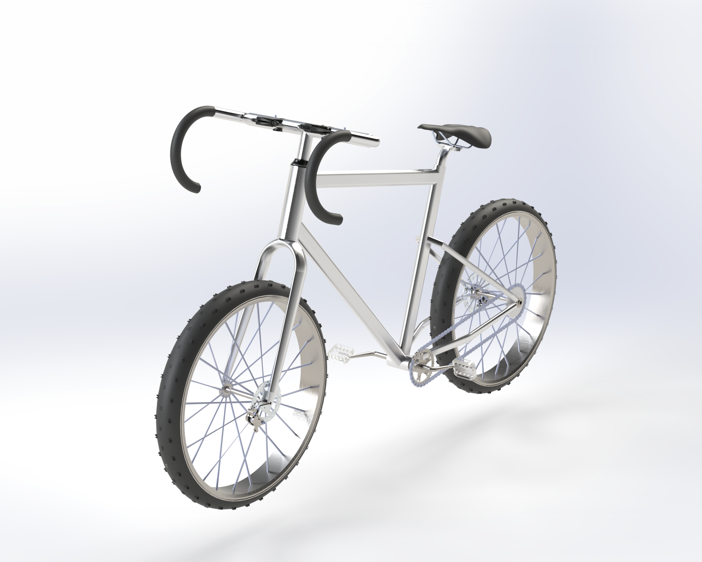
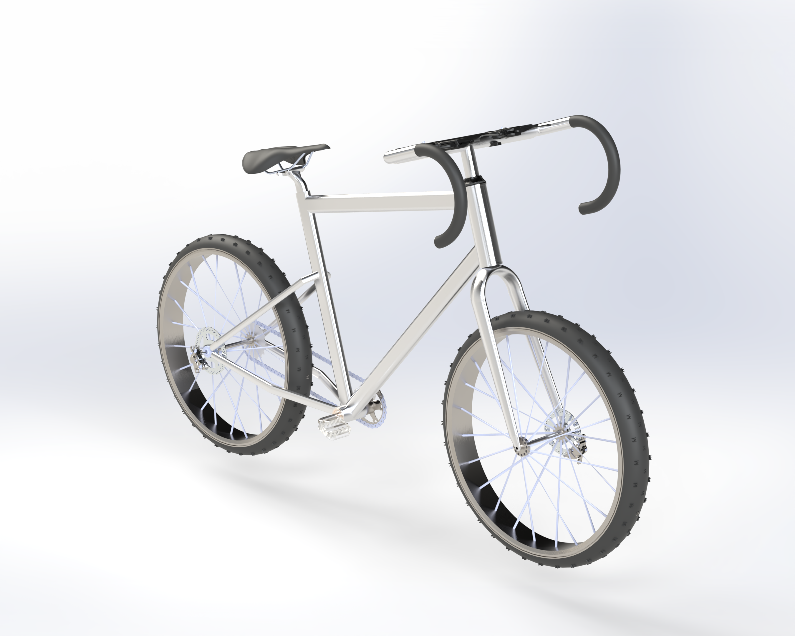
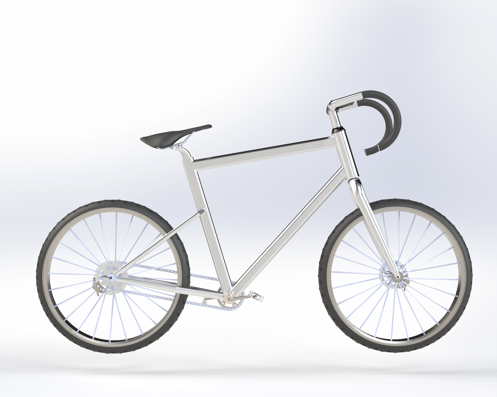
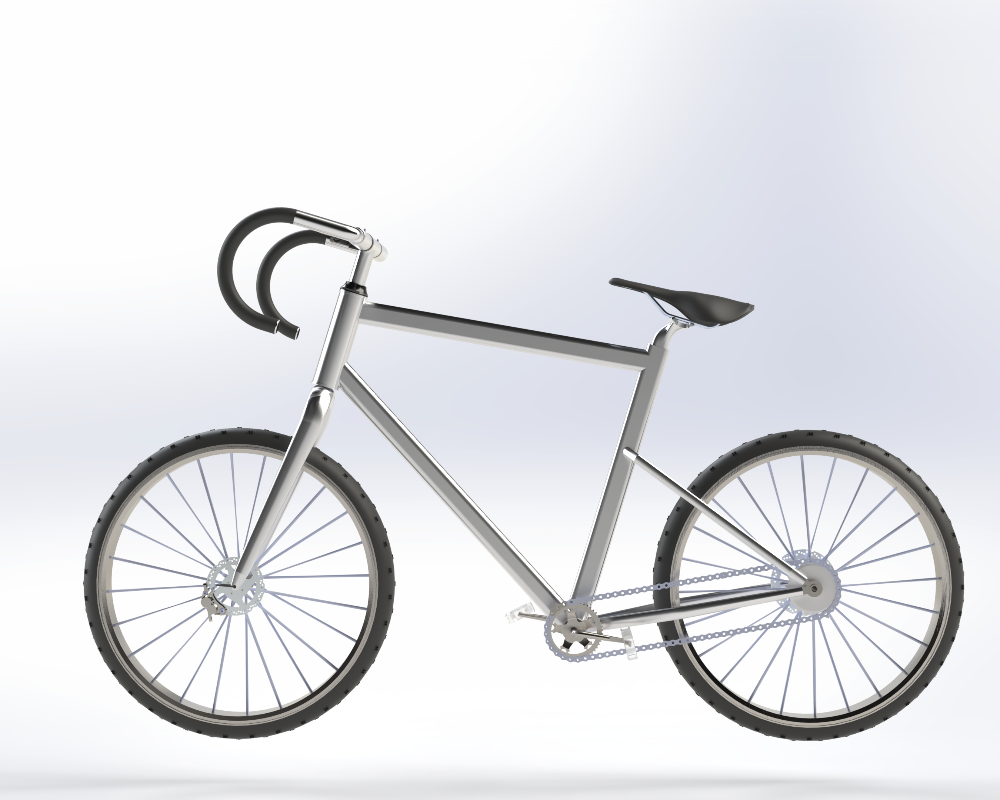
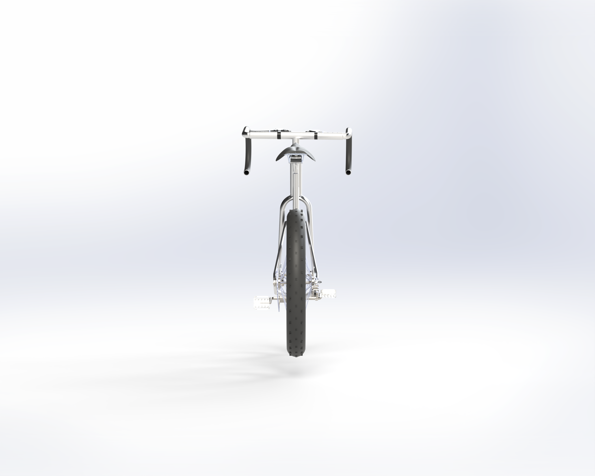
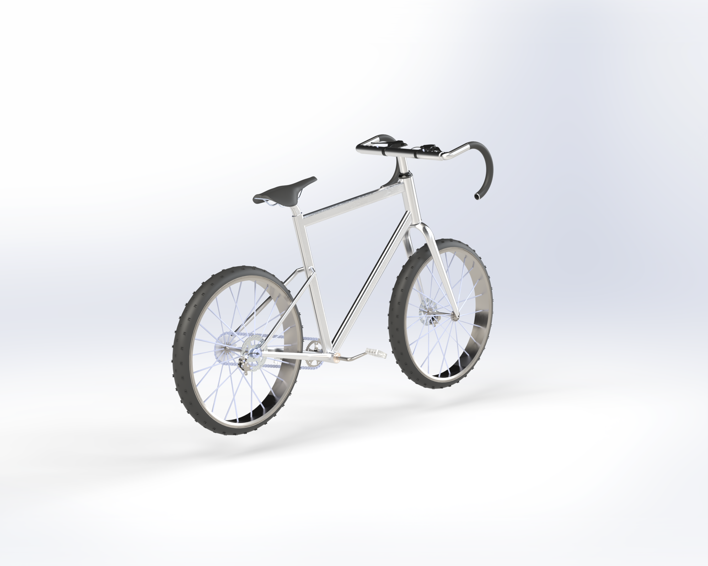
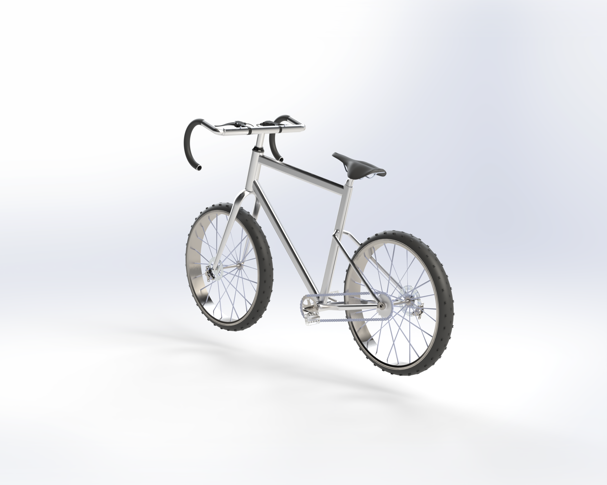
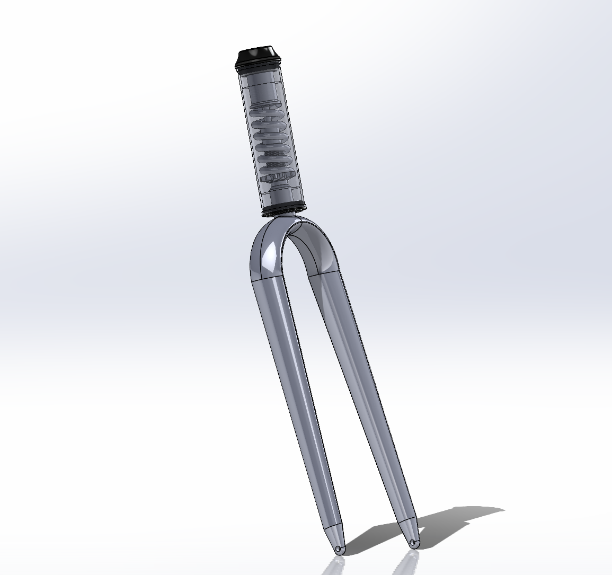
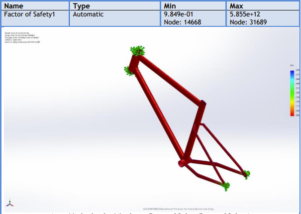

Full bicycle assembly modelled in SolidWorks, featuring a custom-engineered front suspension fork with an internal coil spring visible through a transparent outer shell. Suspension geometry designed analytically, kinematic behaviour verified in SolidWorks Motion. Accompanied by a 116-page technical design report.








